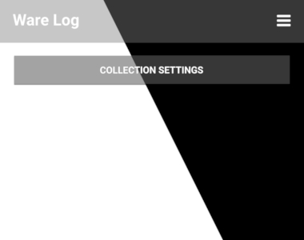

So far we worked on sample data. Now that we have a working list view, can delete and add items, update the cost and weight field, and set collection specific properties, let's not load the sample data anymore. Then, (after clearing the data of the current installation) starting the app the first time greets the user with an empty view.
In this chapter we will remove the call to the sample data that was so far used to fill the database, and we will add a button that leads to the collection set up in case of an empty database.
As the table columns attempt to be generic and work for different domains of items that can be measured in grams, liters etc. we will not have to configure the table to start a new database.
First, remove the call for fillSampleDatabase in openDatabase, including the check for whether the database is empty. Building now should show an empty page. Adding a new item is still possible, since we still create the table in openDatabase, but the list of types to choose from and the tags are empty, so you have to add new ones. As there are no performance issues so far with the check for creating the table every time, we can keep it for simplicity. So adding items right away will still be possible.
Set the visibility of the AppListView in Main.qml to depend on the number of list items:
AppListView {
...
visible: listModel.count > 0
...
}
Then add an AppButton for 'Collection Settings' above the list. It should be as wide as the view, minus some margin, and it is only visible if the list is empty.
AppButton {
text: qsTr("Collection Settings")
visible: listModel.count === 0
width: parent.width - 20
anchors.horizontalCenter: parent.horizontalCenter
anchors.top: parent.top
anchors.topMargin: 10
onClicked: pageMain.navigationStack.push(compCollectionSettings)
}

So now, if the app is started the first time, we would start a new collection, set its name and domain, add items, update them, etc. Of course this concept can be extended much further, so this would be a base implementation.